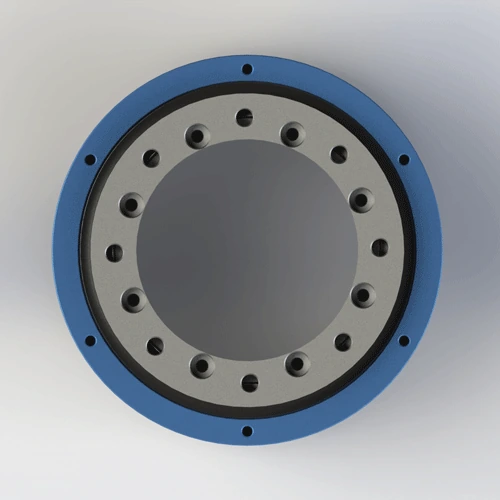

Heavy-duty 2-passage rotary joint for high-pressure pneumatic and fluid applications. PTFE composite seal, AL6061 + 45# steel composite body. Max 10 MPa, 162 mm outer diameter, 4.26 kg. Distributes 2 inlet supplies to 4 outlet ports for multi-actuator rotary tables. Ships in 7 days.
BP-2P-95-0001 is a heavy-duty 2-in-4-out rotary joint designed for high-pressure pneumatic and hydraulic applications. The composite body combines AL6061 aluminum (housing) with 45# steel (shaft and flange) to achieve the strength-to-weight ratio required for 10 MPa operation. The PTFE composite seal is reinforced for high-pressure duty, and the 8-M5 + 2-M10 flange pattern prevents gasket blowout under hydraulic shock. Every unit is pressure-tested at 12 MPa (20% over rating) before shipment.
| Model Number | BP-2P-95-0001 |
|---|---|
| Number of Passages | 2-in-4-out (2 inlets, 4 outlets) |
| Mount Type | Flange Mount (8-M5 + 2-M10) |
| Max Pressure | 10 MPa (100 bar / 1,450 psi) — tested at 12 MPa |
| Max Speed | 200 RPM — derate to 150 RPM for continuous hydraulic oil duty |
| Body Material | AL6061 Aluminum Alloy + 45# Steel |
| Seal Type | PTFE (Teflon) composite seal with FKM O-ring backup |
| Compatible Media | Air, water, water-soluble coolant, light hydraulic oil (ISO VG 32 max) |
| Operating Temperature | -20°C to +80°C |
| Net Weight | Approx. 4.26 kg (4,260 g) |
| Outer Diameter | 162 mm |
| Friction Torque | 0.20–0.40 N·m (air) / 0.30–0.60 N·m (hydraulic oil) |
| Certifications | ISO 9001:2015, CE, RoHS |
| Warranty | 12 Months |
AL6061 + 45# steel composite body: The housing is AL6061-T6 aluminum (yield 276 MPa) to minimize weight, while the shaft and high-stress flange areas use 45# steel (yield 355 MPa, hardness 170–210 HB) to withstand the 10 MPa hoop stress. The steel components are nickel-plated for corrosion resistance. This hybrid construction keeps the joint at 4.26 kg — a full steel body would exceed 8 kg, creating excessive inertia on rotary tables. The steel shaft provides the surface hardness (200+ HB) that the PTFE seal needs for long life at high pressure.
PTFE composite seal for high pressure: The seal uses a higher-fill PTFE compound (glass fiber + graphite + MoS2) than standard BP-2P joints. The added fillers increase compressive strength and reduce cold flow under 10 MPa load. The seal is backed by a stainless steel spring-energizer in the high-pressure zone to maintain contact force as the PTFE relaxes. FKM O-ring provides static sealing at the housing interface. For continuous hydraulic oil above 80°C, specify a PTFE spring-energized seal without FKM.
10-bolt flange design: The 8-M5 + 2-M10 pattern is not arbitrary. The 2-M10 bolts carry 70% of the flange separating force under 10 MPa, while the 8-M5 bolts distribute the remaining 30% and prevent flange rocking. Torque M10 to 12–15 N·m and M5 to 3–4 N·m. Overtightening M10 beyond 18 N·m risks thread stripping in the AL6061 housing.
BP-2P-95-0001 is designed for high-pressure, heavy-duty rotary applications where 2 inlet supplies must be distributed to 4 actuators. Below are the machine types where this model performs best — and the conditions where you should consider a custom design.
Proper installation is critical at 10 MPa — a small error that causes a 0.1 MPa leak on a standard joint will cause a catastrophic 5 MPa spray on BP-2P-95-0001. The most common cause of failure is mismatched bolt torque between M5 and M10 screws, which distorts the flange and creates a high-pressure leak path. Follow these steps for safe, reliable operation.
Confirm your equipment flange has 8×M5 and 2×M10 threaded holes on compatible bolt circles. BP-2P-95-0001 uses a ten-bolt pattern to prevent flange lift under 10 MPa. Do not omit the 2-M10 bolts — they carry 70% of the separating force. Without them, the 8-M5 bolts will elongate and the flange will leak within hours. Download the 2D drawing for exact P.C.D.s, hole diameters, and tolerances. Check mating flange flatness with a dial indicator: must be within 0.03 mm to prevent gasket blowout at 10 MPa.
Secure the flange using 8×M5 and 2×M10 screws with spring washers. Torque M5 to 3–4 N·m and M10 to 12–15 N·m. Tighten in three stages: first the M10 bolts to 50% torque, then the M5 bolts to 50% torque, then all bolts to final torque in a cross pattern. Never torque M10 beyond 18 N·m — the AL6061 housing threads will strip. Use a calibrated torque wrench. After tightening, perform a 0.5 MPa air test before applying hydraulic pressure to verify flange integrity.
If your model includes an anti-rotation tab, secure it to a fixed bracket with an M6 or M8 screw. Never let the stationary body rotate with the shaft — at 10 MPa, a twisted hose can whip with lethal force. The anti-rotation arm must be rigid — flexible brackets allow body oscillation that fatigues the high-pressure seal. Leave 1–2 mm axial clearance to prevent thermal expansion from binding the shaft. In hydraulic applications, use a steel (not aluminum) anti-rotation bracket to handle the reaction torque.
Use flexible high-pressure hoses rated for ≥15 MPa working pressure (1.5× safety factor). Rigid pipe is prohibited — hydraulic shock from valve closure will fracture rigid connections. Install a 25-micron filter upstream for hydraulic oil duty; 40-micron is acceptable for air and water. For hydraulic oil, add a pressure relief valve set to 11 MPa to protect the joint from pressure spikes during valve switching. Label inlet and outlet ports clearly — reversing inlet and outlet on a distributor joint will starve the downstream actuators.
Run at low pressure (1.0 MPa) and low speed (20–30 RPM) for 15 minutes without load. This beds the high-pressure PTFE seal against the steel shaft surface and allows the spring-energizer to find its equilibrium. Check for leaks at the flange and all port interfaces with a leak detection fluid. If dry, gradually increase to 50% operating pressure for 10 minutes, then 100% pressure for 5 minutes before full speed. Skipping the run-in at 10 MPa is dangerous — an unseated seal can blow out within minutes of full-pressure application, causing injury and equipment damage.
Full dimensions, tolerances, thread specs, flange bolt patterns (8-M5 + 2-M10 P.C.D.s), 162 mm OD, shaft finish requirements, seal groove details, and port layout. 120 KB.
Free 3D files provided after inquiry. Includes AL6061 + 45# steel composite body, 8-M5 + 2-M10 flange, 2-in-4-out port geometry, and anti-rotation bracket. Use for CAD fit verification before ordering.
Complete guide: high-pressure flange mounting, M5/M10 torque specs, anti-rotation, filtration, pressure relief, run-in procedure, and maintenance checklist. 650 KB.
AL6061 + 45# steel material traceability, hardness test report, nickel plating thickness report, and RoHS compliance certificate. Available upon request with order.
Not sure if BP-2P-95-0001 is the right model? Use this comparison to decide — and know exactly when to choose a lower-pressure model or specify a custom high-pressure design.
| Your Requirement | BP-2P-95-0001 Fit | Better Alternative | Why Upgrade / Downgrade |
|---|---|---|---|
| 2-in-4-out distribution, 5–10 MPa hydraulic, heavy rotary table | ✅ Perfect — 10 MPa, 200 RPM, 162 mm OD | — | — |
| 2-in-2-out, 1 MPa, clean environment, cost sensitive | ❌ Over-specified and over-priced | BP-2P-0001 | 1 MPa rated, no steel components, 60% lower cost |
| 2-in-4-out, 3–5 MPa, dust-proof required | ⚠ Works but no dust seal | BP-2P-130-0001 | 5 MPa rated, can be fitted with dust seal option |
| 4 independent inlets (not 2-in-4-out distribution) | ❌ Wrong configuration | Custom 4-in-4-out | Independent seals for each inlet prevent pressure cross-talk |
| Food-grade or medical, any pressure | ❌ Standard FKM not FDA | Custom FDA-grade | 304/316 stainless body, FDA 21 CFR 177.2600 seal, cleanroom packaging |
| Continuous water immersion, 10 MPa | ❌ 45# steel shaft will rust | Custom stainless shaft | 316 stainless shaft with passivation and PTFE seal |
| Speed >200 RPM at 10 MPa | ❌ Over speed rating | Custom high-speed hydraulic | Special low-friction seal and bearing for 500 RPM at 10 MPa |
The #1 cause of BP-2P-95-0001 high-pressure failure is bolt torque error. A technician torques all ten bolts to 4 N·m "to be safe" — the M10 bolts are undertorqued by 70%, and the flange lifts under 8 MPa hydraulic pressure. Hydraulic oil sprays at 100 bar, creating a safety hazard. Alternatively, torquing M5 bolts to 15 N·m strips the AL6061 threads. Rule: M5 = 3–4 N·m. M10 = 12–15 N·m. Use two torque wrenches. Tighten M10 first to 50%, then M5 to 50%, then all to final torque in a cross pattern.
A hydraulic system builder installs BP-2P-95-0001 on a 10 MPa rotary table but uses the machine's standard 100-micron return filter. A 50-micron particle enters the joint, embeds in the PTFE seal, and scores the steel shaft. Within 48 hours, the seal leaks at 6 MPa. The builder replaces the seal, but the same thing happens because the filtration never changes. Rule: At 10 MPa, always use 25-micron absolute filtration on the supply line. The cost of a $40 filter element is negligible compared to a $200 seal kit and 4 hours of downtime.
A machine designer needs 4 independent hydraulic functions on a rotary table and buys BP-2P-95-0001 assuming "4 outlets means 4 independent channels." They connect 4 different pressure sources to the 4 outlets. The result: when outlet 1 pressurizes at 8 MPa, hydraulic oil backflows through the internal manifold into outlet 2, which is at 2 MPa. The actuator on outlet 2 moves unexpectedly, crushing a sensor. Rule: BP-2P-95-0001 is a 2-in-4-out distributor — 2 inlets split to 4 outlets, not 4 independent inlets. For 4 independent hydraulic channels, specify a custom 4-in-4-out manifold rotary joint.
Other rotary joints commonly purchased with BP-2P-95-0001 — or the models you downgrade to when 10 MPa is not required.
The standard version combines AL6061 aluminum body with 45# steel shaft for balanced strength and weight. For full steel or full aluminum options, contact our team. All versions are ISO9001 certified. The export version includes English-language documentation, CE marking, and RoHS compliance certificate. Both versions have identical pressure (10 MPa), speed (200 RPM), and temperature (-20°C to +80°C) ratings. The 8-M5 + 2-M10 flange pattern and 162 mm outer diameter are standard across all versions. Every unit is pressure-tested at 12 MPa before shipment regardless of version.
Yes — the PTFE composite seal is compatible with water, water-soluble coolant, and light hydraulic oil (up to ISO VG 32). The AL6061 body is anodized and the 45# steel shaft is nickel-plated for corrosion resistance. For continuous water duty, derate pressure to 7 MPa and speed to 150 RPM to reduce seal wear. At 10 MPa with water, the seal experiences higher friction than with hydraulic oil, accelerating wear. For deionized water or aggressive coolant, contact Begapunk for seal compatibility review. Do not use with media containing particles >25 micron without filtration.
BP-2P-95-0001 uses a flange mount with 8×M5 and 2×M10 screws on two bolt circle diameters. Download the 2D PDF drawing for exact P.C.D.s, hole sizes, counterbore depths, and tolerances. Ensure your equipment mating flange matches before ordering. The 2-M10 bolts are critical — they carry 70% of the flange separating force at 10 MPa. Do not substitute M5 for M10 or omit the M10 bolts. Custom flange patterns are available as special orders with 7–10 day additional lead time. For high-vibration environments, specify thread-locking compound on all flange bolts.
Yes — free 3D STEP and IGES files are provided after you send an inquiry. The file includes the AL6061 + 45# steel composite body, 8-M5 + 2-M10 flange pattern, 2-in-4-out port geometry, 162 mm outer diameter, and anti-rotation bracket mounting hole pattern. Use the 3D file to verify clearance, port direction, flange bolt engagement, and hose routing space in your CAD assembly before ordering. We do not post 3D files publicly to protect our designs, but every qualified inquiry receives the file within 24 hours. Include your CAD software version if you need a specific file format.
Upgrade to a custom design when your application exceeds the 2-in-4-out, 10 MPa, 200 RPM envelope. Common triggers: (1) You need 4 independent inlets (not 2-in-4-out distribution) — specify a custom 4-in-4-out manifold rotary joint to prevent pressure cross-talk. (2) Your pressure requirement exceeds 10 MPa — Begapunk designs custom joints up to 30 MPa with reinforced steel bodies and spring-energized seals. (3) Your speed exceeds 200 RPM at 10 MPa — specify a low-friction seal and high-speed bearing variant. (4) You need food-grade or medical compliance — custom 304/316 stainless body with FDA seal and cleanroom packaging. (5) Your media is abrasive or corrosive — custom ceramic-coated shaft and hardened seal options are available. Custom lead time is typically 14–21 days with free 3D STEP files.
We design custom rotary joints for any number of passages, pressure, thread type, and mounting style. Free 3D STEP file with every inquiry. Typical custom lead time: 10–14 days.
Request Custom Design →Technical Note: All pressure ratings, speed ratings, and material specifications referenced on this page are based on Begapunk BP-series standard pneumatic rotary joints tested under controlled laboratory conditions. Actual performance depends on operating conditions, media quality, installation practices, and maintenance schedule. For applications outside standard ratings — including high-pressure hydraulic above 10 MPa, continuous water immersion, food-grade, or cleanroom environments — consult Begapunk factory engineering before specification. Last updated: June 11, 2026.